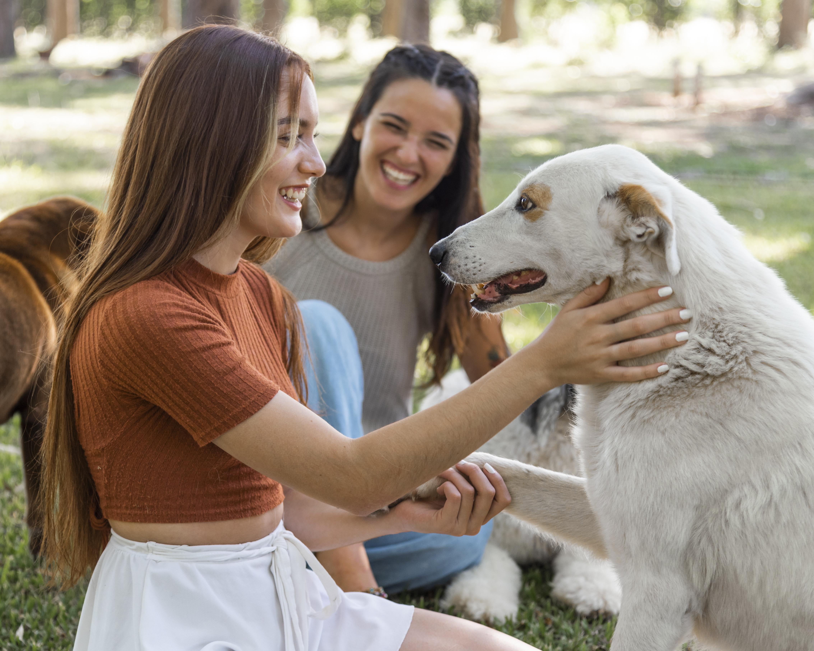

Te damos la bienvenida a Amigo fiel
En Amigo Fiel, somos más que un refugio; somos una comunidad comprometida con el bienestar y la felicidad de los animales. Nuestra misión es proporcionar un hogar seguro y amoroso a perros y gatos que han sido abandonados, maltratados o que simplemente necesitan una segunda oportunidad en la vida. Creemos que cada animal merece una vida llena de cariño y cuidado, y trabajamos incansablemente para hacer de esto una realidad.
Nuestros rescatados
Reseñas
Jane Doe
"Adoptar a Luna fue la mejor decisión que tomamos. Amigo Fiel hizo que el proceso fuera sencillo y lleno de amor."
10/11/2023
John Smith
"Gracias a Amigo Fiel, Max encontró un hogar. No podríamos estar más felices con nuestro nuevo amigo."
05/12/2023
Maria García
"El equipo de Amigo Fiel es increíble. Nos apoyaron en cada paso de la adopción de Rocky."
15/01/2024
Laura Pérez
"Adoptar a Simba a través de Amigo Fiel cambió nuestras vidas. El proceso fue rápido y lleno de cariño."
25/02/2024
Carlos Fernández
"Gracias a Amigo Fiel, encontramos a Toby, un compañero leal y amoroso. ¡Estamos muy agradecidos!"
14/03/2024
Lucía Martínez
"El equipo de Amigo Fiel hizo que la adopción de Bella fuera una experiencia maravillosa y sin complicaciones."
08/04/2024
Andrés Gómez
"Adoptar a Rocky con la ayuda de Amigo Fiel fue la mejor decisión. El proceso fue fácil y lleno de apoyo."
20/05/2024
Emma López
"Adoptar a Nala a través de Amigo Fiel fue una experiencia maravillosa. Nos brindaron todo el apoyo que necesitábamos."
02/06/2024
Roberto Ruiz
"Estamos encantados con la adopción de Bruno. Amigo Fiel hizo todo el proceso muy fácil y especial."
19/07/2024
¿Quiénes Somos?
Amigo Fiel nació del amor y la pasión por los animales. Somos un grupo de voluntarios dedicados, veterinarios, y amantes de los animales que unen esfuerzos para rescatar, rehabilitar y reubicar a nuestros amigos peludos en hogares donde recibirán el amor que merecen. Cada animal que llega a nuestro refugio recibe atención médica, alimentación adecuada, y mucho cariño mientras espera encontrar su hogar definitivo.
Adopta, No Compres
Adoptar un animal de compañía es una de las decisiones más gratificantes que puedes tomar. No solo estarás dando una nueva oportunidad a un animal necesitado, sino que también estarás liberando un espacio en nuestro refugio para que podamos ayudar a otro en necesidad. En Amigo Fiel, te acompañamos durante todo el proceso de adopción para asegurarnos de que encuentres al compañero perfecto para tu familia.
Cómo Puedes Ayudar
Hay muchas maneras en las que puedes contribuir a nuestra causa:
- Adopta: Da un hogar permanente a uno de nuestros rescatados.
- Voluntariado: Únete a nuestro equipo de voluntarios y ayuda en el cuidado diario de nuestros rescatados.
- Donaciones: Contribuye con alimentos, medicamentos, o donaciones monetarias para apoyar nuestro trabajo.
- Difusión: Comparte nuestras historias y rescatados disponibles para adopción en tus redes sociales.
Gracias por apoyar a Amigo Fiel y por considerar la adopción como la mejor opción. Juntos, podemos hacer una diferencia en la vida de muchos animales.